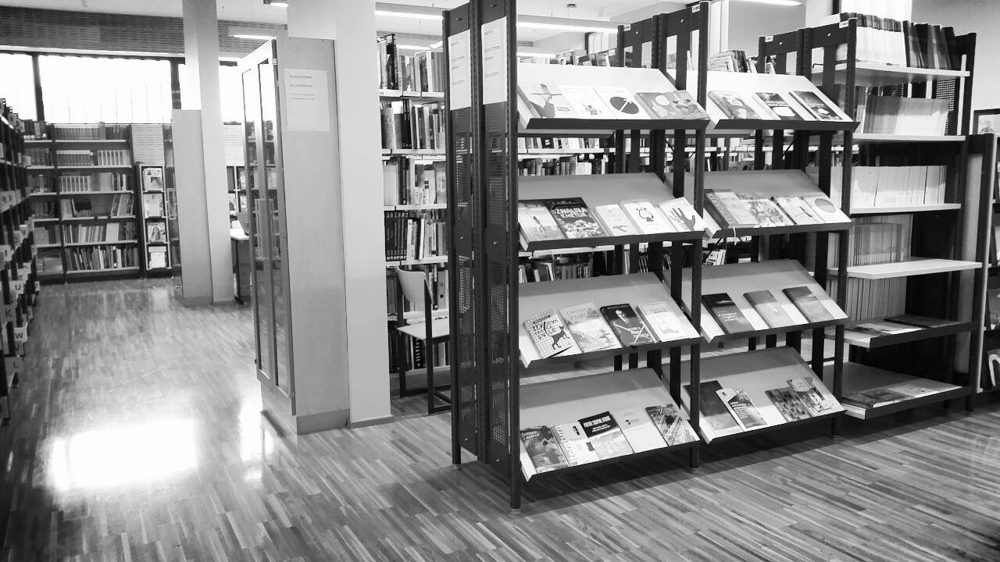

1. 10 držav z največjim odstotkom žensk v parlament (2014): Dostopno na: http://lifestyle.enaa.com/zdravje-in-prosti-cas/10-drzav-z-najvecjim-odstotkom-zensk-v-parlamentu.html (19.12.2015).
2. A.J. (2013): Natalie Portman o „zgrešenem feminizmu“ Hollywooda. Dostopno na: http://www.rtvslo.si/kultura/film/natalie-portman-o-zgresenem-feminizmu-hollywooda/319070 (22.12.2015)
3. A.P.J. (2014): Beyonce brez dlake na jeziku: „Enakost med spoloma je mit!“. Dostopno na: http://www.rtvslo.si/zabava/iz-sveta-znanih/beyonce-brez-dlake-na-jeziku-enakost-med-spoloma-je-mit/327317 (22.12.2015)
4. Antić Gaber, M. (2011), Ženske na robovih politike, Ljubljana: Sophia
5. Beauvoir, Simone de. 2013. Drugi spol. Ljubljana: Krtina
6. Beauvoir, Simone de: Seksualnost, eksistencialistični feminizem in Drugi spol. Dostopno prek: https://sl.wikipedia.org/wiki/Simone_de_Beauvoir#Seksualnost.2C_eksistencialisti.C4.8Dni_feminizem_in_Drugi_spol (17. december 2015)
7. Bock, Gisela (2004): Ženske v evrpski zgodovini: od srednjega veka do danes.Ljubljana: Založba /cf*.
8. D.S. (2014): Watsonova s „čarovniškimi triki“ do večje politične moči žensk. Dostopno na: http://www.rtvslo.si/zabava/zanimivosti/foto-watsonova-s-carovniskimi-triki-do-vecje-politicne-moci-zensk/346688 (20.12.2014)
9. Dawn, A. (2012): The Gender Gap: Percentage of Women in Government Worldwide. We're Number One, Right? Not So Much... Dostopno na: http://www.dailykos.com/story/2012/09/27/1137274/-The-Gender-Gap-Percentage-of-Women-in-Government-Worldwide-We-re-Number-One-Right-Not-So-Much#20120928103509 (19.12.2015)
10. Džomba, T. 2006. Feminizem in družbena netolerantnost. Diplomsko delo, Ljubljana: Univerza v Ljubljani, Fakulteta za družbene vede
11. Enakopravnost spolov: ZGODOVINA PRIDOBIVANJA PRAVIC (2015). Dostopno prek: http://www.delo.si/assets/info5/20150307/enakopravnost-spolov/do/sklop2.html (10. december 2015)
12. Hasanović, S. 2012. Predstavništvo žensk v parlamentu in vpliv različnih volilnih sistemov na predstavništvo spolov. Diplomsko delo, Maribor: Univerza v Mariboru, Pravna fakulteta
13. Hvalec, S. 2005. Politika enakih možnosti žensk in moških v Sloveniji. Diplomsko delo, Ljubljana: Univerza v Ljubljani, Fakulteta za družbene vede
14. Jalušič, Vlasta. 1997. 8. marec v zgodovini boja za ženske pravice. Ljubljana: Vlada Republike Slovenije, Urad za žensko politiko
15. K.K. (2015): Feministke jezne na zvezdnico Velikih Pokovcev. Dostopno na: http://www.rtvslo.si/zabava/iz-sveta-znanih/feministke-jezne-na-zvezdnico-velikih-pokovcev/354917 (10.12.2015)
16. Lana Del Rey (2014): Dostopno na: https://www.rtvslo.si/kultura/citat/lana-del-rey/339084 (12.12..2015)
17. Mihelič, P. (2011): Zaposlovanje žensk na vodilnih mestih v osrednjeslovenski regiji. Diplomsko delo visokošolskega strokovnega študija, Kranj: Univerza v Mariboru, Fakulteta za organizacijske vede
18. Petan, B. (2010): Položaj žensk na Japonskem trgu delovne sile. Diplomsko delo, Ljubljana: Univerza v Ljubljani, Fakulteta za družbene vede
19. Pešec, V. (2004): Vloga žensk v azijskih državah v razvoju: vplivi religije. Diplomsko delo, Ljubljana: Univerza v Ljubljani, Fakulteta za družbene vede
20. Rejc, Teja 2015. (Post)feminizem kot samoreprezentacijski trend med mladostnicami na instagramu. Diplomsko delo, Ljubljana: Univerza v Ljubljani, Fakulteta za družbene vede
21. Resolucija Evropskega parlamenta z dne 13. marca 2012 o enakosti žensk in moških v Evropski uniji – 2011: Dostopno na: http://eur-lex.europa.eu/legal-content/SL/TXT/HTML/?uri=CELEX:52012IP0069&rid=2 (18.12.2015).
22. Selčan, P., Vivod, M. in Kavčič, Š. Položaj žensk v Sloveniji. Projektna naloga, Celje: Poklicna in strokovna šola, Poslovno-komercialna šola Celje
23. Selinšek, A. (2004): Ženska med družino in kariero. Diplomsko delo, Ljubljana: Univerza v Ljubljani, Fakulteta za družbene vede
24. Sever, N. (2002): Položaj žensk v islamu. Diplomsko delo, Ljubljana: Univerza v Ljubljani, Fakulteta za družbene vede
25. Šalamun, A. (2002): Feministična sociologija religije. Diplomsko delo, Ljubljana: Univerza v Ljubljani, Fakulteta za družbene vede
26. Ule, M., Šribar, R. in Umek Venturini, A. (2013): Ženske v znanosti, ženske za znanost. Ljubljana, FDV in Komisija za ženske v znanosti pri Ministrstvu za izobraževanje, znanost in šport RS: Dostopno na: http://www.fdv.uni-lj.si/docs/default-source/zalozba/pages-from-zenske_v-znanosti_tisk.pdf?sfvrsn=2 (20.12.2015).
27. Wikipedia Feminism. Dostopno prek: https://en.wikipedia.org/wiki/Feminism (17. december 2015)
28. Wikipedia Olympe de Gouges. Dostopno prek: https://en.wikipedia.org/wiki/Olympe_de_Gouges (19. december 2015)
29. Wikipedia The Subjection of Women. Dostopno prek https://en.wikipedia.org/wiki/The_Subjection_of_Women (3. december 2015)
30. Zatezalo, A. 2008. Položaj ženske v antičnem Rimu. Diplomsko delo, Maribor: Univerza v Mariboru, Filozofska fakulteta
31. Ženske in politika (2013): Dostopno na: http://studentski.net/gradivo/ulj_fdv_pa1_zip_sno_zapiski_01?r=1 (18.12.2015).
32. Ženske v politiki (2015): Dostopno na: http://www.delo.si/assets/info5/20150307/enakopravnost-spolov/do/sklop1-1.html (20.11.2015)
